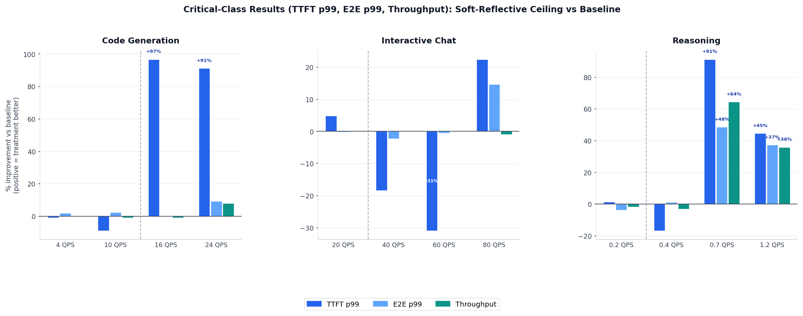

From Simulation to Production Part II: Soft-Reflective Flow Control for llm-d¶
Part 2 of the sim2real series. A case study in closing the AI-native loop across a second problem class: dispatch prioritization.
Introduction¶
The first article in this series traced a complete traversal of the AI-native loop for llm-d's admission control layer: an AI agent framework (Nous) used a high-fidelity simulator (BLIS) to discover a probabilistic, proactive admission control policy that cuts critical-traffic TTFT by up to 97% at near-saturation workloads. That article restates the core methodology: simulation lets the loop run at machine speed, reserving expensive GPU time for validating the few candidates that actually merit real-hardware testing.
This article applies the same loop to a different problem: flow control. The distinction matters. Admission control acts at the gate: it decides whether an incoming request enters the system at all, and may reject it. Flow control acts at the dispatch queue: it decides which already-admitted request gets sent to a backend server next. The two mechanisms protect different points in the pipeline and neither replaces the other.
The concrete outcome is the soft-reflective ceiling policy: a new flow control plugin for llm-d-router that reduces critical-class TTFT p99 by up to 98% at near-capacity load without rejecting a single request. It is now merged into llm-d-router, and users can enable it today with a single YAML change.
Observe: The Flow Control Problem¶
llm-d's flow control framework gates dispatch of queued requests to backend servers based on cluster saturation. Each priority band is assigned a ceiling value: when saturation reaches or exceeds a band's ceiling, dispatch halts for that band.
The default flow control option, static-usage-limit policy, applies a single threshold to every priority band equally. Its default threshold is 1.0, making it effectively a no-op: every band dispatches freely until pods are fully saturated. Lowering the threshold does not help: setting threshold=0.5 gates critical traffic and sheddable traffic at the same saturation point. There is no way to say "shed non-critical work first." Under load, critical requests queue behind sheddable work, inflating TTFT for the traffic that matters most.
Reason + Change: Simulation-Driven Discovery¶
The Simulator: BLIS¶
The same simulator used in Part 1, BLIS (a high-fidelity discrete-event simulator for distributed LLM inference systems), provides the economics that make agentic exploration viable. A single workload evaluation that takes 30 minutes on real hardware completes in seconds using BLIS. Nous can evaluate many candidate policies across diverse workload conditions before a single GPU is reserved (see Part 1 for a full treatment of the simulator and its role in the loop).
The Discovery: Nous¶
Nous explored the space of flow control policies in simulation using the same hypothesis-driven experimentation loop it applied to admission control. Given the objective of protecting critical-band dispatch under load, it searched for a policy with two properties that binary cliff policies lack: a dead zone at low saturation where no gating occurs (avoiding unnecessary overhead when there is no contention), and a smooth ramp that becomes more aggressive as saturation grows (avoiding oscillation at the threshold).
The algorithm that emerged has a strikingly natural form. For N priority bands, the per-band ceiling is:
ceiling[0] = 1.0 # critical: never gated
ceiling[i] = 1 - i * saturation / (N-1) # linearly reflected
When the sheddable band's saturation exceeds its ceiling, rather than fully blocking, the
plugin rate-limits dispatch to every round(saturation / (1 - saturation))-th tick, a
proportional duty cycle that scales smoothly with load. The dispatch loop already treats
saturation >= ceiling as a head-of-line block, so alternating 1.0 and 0.0 on successive
ticks produces proportional throughput without any change to the dispatch code path.
For a two-tier deployment (critical + sheddable), the ceiling collapses to 1 - saturation
for the sheddable band:
| Saturation | Regime | Critical ceiling | Critical blocked | Sheddable ceiling | Sheddable blocked |
|---|---|---|---|---|---|
| 0.00–0.50 | Below saturation: no gating | 1.00 | 0% | 1.00–0.50 | 0% |
| 0.50 | Boundary: gating begins | 1.00 | 0% | 0.50 | 0% |
| 0.60 | Proportional | 1.00 | 0% | 0.40 | 50% |
| 0.75 | Proportional | 1.00 | 0% | 0.25 | 67% |
| 0.90 | Proportional | 1.00 | 0% | 0.10 | 89% |
| ≥ 1.00 | Hard block | 1.00 | 0% | 0.00 | 100% |
The dead zone below saturation 0.5 means sheddable traffic flows freely at half-capacity and below. The steep tail beyond 0.8 reserves nearly all dispatch capacity for critical traffic without ever fully closing the sheddable gate: bounded latency, not indefinite starvation.
Compare this to the Part 1 algorithm: the probabilistic admitter has two constants discovered by
Nous (exponent 5, multiplier 300) tuned to hit a shedding curve of the right shape. The
reflective ceiling has no free parameters; the shape is determined entirely by the number of
priority bands and the current saturation reading. Adding a new priority level (a new InferenceObjective in llm-d-router's terms)
automatically extends the reflection with no config change.
Simulation Results¶
Before committing to real-hardware benchmarks, BLIS confirmed the algorithm's direction across three workload types:
| Workload | Input tokens | Output tokens | Critical/Sheddable | Models |
|---|---|---|---|---|
| Code generation | ~1,176 (large) | ~195 (moderate) | 30/70 | IDE inline suggestions and CI/CD code review pipelines where critical suggestions share capacity with background analysis jobs. |
| Interactive chat | ~39 (short) | ~300 (moderate) | 30/70 | High-throughput conversational APIs serving mixed priority tiers. |
| Reasoning | ~780 (moderate) | ~6,200 (large) | 50/50 | Agent chains and multi-step planning where critical interactive queries compete with batch reasoning jobs. |
AI-Assisted sim2real Translation: Simulation to Production Code¶
The same sim2real translation pipeline from Part 1 applies here. The agents work from the interface contract, produce a complete package with unit tests and parameter validation, and the output carries full provenance: a simulation-validated algorithm, translated by AI agents, ready to be registered and enabled with a YAML config change.
Validate: Real-Cluster Benchmark Results¶
Setup¶
| Parameter | Value |
|---|---|
| Hardware | 2 × H100-SXM-80GB |
| Model | Qwen/Qwen3-14B |
| Baseline | Default llm-d-router flow control (constant ceiling 1.0) |
| Treatment | soft-reflective-ceiling-policy |
| Load generator | blis observe (open-loop, --max-concurrency 10000) |
Note that this benchmark uses 2 × H100 rather than the 4 × H100 cluster used in Part 1, reflecting a different hardware configuration while keeping the same model.
Workloads¶
The real deployment was validated against the same workloads as the simulator: code generation, interactive chat and reasoning.
All metrics below are for critical-class traffic only. Delta percentages show treatment vs. baseline (negative = improvement).
Results¶
The chart below covers all workloads and request rates, comparing the soft-reflective-ceiling-policy treatment to the default constant-ceiling baseline. Each QPS group shows three bars: TTFT p99 (dark blue), E2E p99 (light blue), and throughput (teal). Bars above zero indicate improvement; bars below zero indicate regression. The dashed vertical line in each panel marks where proportional gating begins.

Reading the Results¶
The plugin's operating sweet spot is near-capacity load, where saturation fluctuates in the proportional gating regime (0.5–1.0):
Code generation @ 16 QPS is the clearest signal. The baseline saturates on prefill from 70%-sheddable large-input requests; critical TTFT p99 reaches 13.6 s. The treatment proportionally gates sheddable dispatch, letting critical requests reach pods with minimal wait: critical TTFT p99 falls to 263 ms, a 96.7% reduction. The difference between a 13-second and a 263-millisecond time-to-first-token is the difference between a usable and an unusable developer experience.
Reasoning @ 0.7 QPS shows the mechanism at work on long-running requests. Decode-heavy workloads cause sustained high saturation, and the proportional gating continuously protects critical prefill. Critical TTFT p99 drops from 330 s to 16 s (−91.2%), E2E improves −48.5%, and throughput recovers 64.4%, because the baseline was overloaded enough to drop requests that the treatment successfully completed.
Under-capacity workloads (code generation @ 4/10 QPS, interactive chat @ 20 QPS, reasoning @ 0.2 QPS) show neutral results: saturation stays below the gating threshold and the plugin is correctly a no-op. This is expected and important: a flow control policy that penalizes traffic when there is no contention would cause harm rather than help.
Interactive chat @ 40/60 QPS shows the one range where the treatment is modestly worse than baseline. These workloads operate near but not yet at capacity, in the transition zone where the reflective ceiling begins to engage but the benefit of protecting critical dispatch has not yet exceeded the overhead of rate-limiting sheddable traffic. The effect is small (TTFT p99 +18% and +31% respectively at low absolute baseline values) and disappears at 80 QPS when the system is clearly above capacity.
Deploy: A Contribution to llm-d¶
With real-cluster benchmarks confirming the gains predicted by simulation, the algorithm
ships upstream as a new plugin in llm-d-router: soft-reflective-ceiling-policy. Users can
enable it today with a single YAML change and no new infrastructure:
apiVersion: llm-d.ai/v1alpha1
kind: EndpointPickerConfig
featureGates:
- flowControl
plugins:
- type: queue-scorer
- type: kv-cache-utilization-scorer
- type: prefix-cache-scorer
- type: soft-reflective-ceiling-policy
schedulingProfiles:
- name: default
plugins:
- pluginRef: queue-scorer
weight: 2.0
- pluginRef: kv-cache-utilization-scorer
weight: 2.0
- pluginRef: prefix-cache-scorer
weight: 3.0
flowControl:
usageLimitPolicyPluginRef: soft-reflective-ceiling-policy
The plugin is most effective for deployments operating at 60-100% capacity with a meaningful fraction of sheddable traffic: code generation pipelines, batch reasoning jobs, background inference tasks running alongside latency-sensitive critical traffic. Under-capacity deployments see no effect. Deployments above 150% capacity are better served by admission control (which can shed load at the gate) rather than flow control (which cannot reject requests, only prioritize among admitted ones).
Closing the Loop¶
A second traversal of the same loop: constant-ceiling flow control left critical traffic queuing behind sheddable work; simulation-driven discovery produced the reflective ceiling algorithm; AI-assisted translation delivered a production Go plugin; real-cluster benchmarks on 2 × H100 confirmed up to 98% TTFT improvement at near-capacity load; and the plugin is now in llm-d-router, enabled with a YAML config change.
What We Learned¶
Three lessons emerged from this iteration that were not obvious at the outset:
Proportionality beats binary cliffs. The constant-ceiling baseline flips abruptly between fully-open and fully-blocked as saturation crosses a threshold. This causes oscillation and provides no graceful degradation for the cases that matter most: moderate overload, where the system is stressed but not catastrophic. A policy that smoothly ramps throttling intensity with saturation is more stable and more useful across a wider operating range.
A no-op at low load is a feature, not a bug. The reflective ceiling guarantees the plugin does nothing when saturation is below the band's reflection point. Confirming this in simulation (the near-zero reasoning result at 0.2 QPS) gave confidence before real-hardware testing. A flow control policy that penalizes traffic when there is no contention would cause harm. Testing the absence of harm is as important as testing the presence of benefit.
Simulation confirms direction; real hardware quantifies magnitude. In this case the absolute gains on real hardware exceeded simulation estimates, but that is not guaranteed. The simulator cannot fully model GPU memory pressure, vLLM preemption cascades, and batching interference under real load, so measured magnitudes can differ in either direction. For policy evolution, that is fine: the goal is not 100% accuracy, but reliable signal on whether a candidate policy improves or regresses the target metric. A simulation that correctly predicts the direction of improvement filters out bad candidates before any GPU time is spent, regardless of whether the magnitude matches exactly.
What Comes Next¶
This article and Part 1 together cover two distinct protection layers: admission control reduces total load at the gate by probabilistically rejecting sheddable requests before they enter the dispatch queue; flow control prioritizes dispatch among already-admitted requests. Composing both provides layered protection: admission control prevents overload, flow control ensures critical traffic is served first under normal-to-near-capacity operation.
The natural next frontier is exploring multiple interacting policies simultaneously: how admission control and flow control compose under varying load, and what the joint policy space looks like when Nous searches it rather than each mechanism in isolation. With BLIS becoming the official llm-d simulator, this kind of multi-policy search becomes tractable. The same simulation infrastructure that validated these two algorithms can explore interactions, emergent behaviors, and entirely new problem classes: routing, autoscaling, prefill-decode disaggregation.